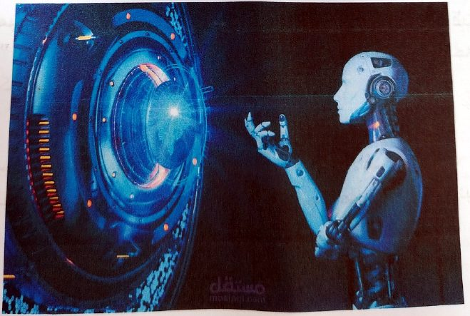
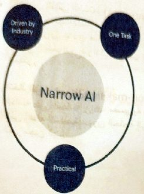
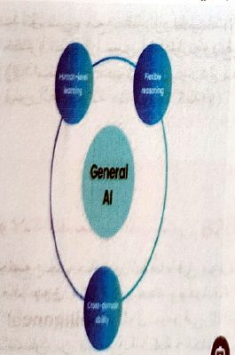
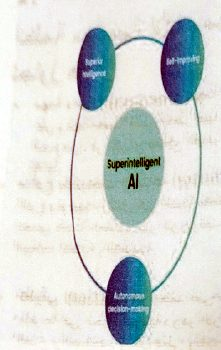
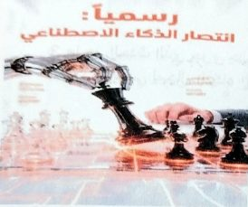
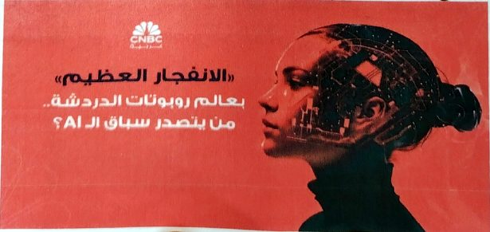
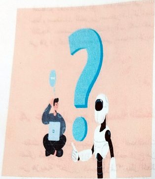

مفهوم الذكاء الاصطناعيThe Concept of Artificial Intelligence
نظري · م01أقسام المحاضرة (4)
مفهوم الذكاء الاصطناعيThe Concept of Artificial Intelligence

هو علم جعل الآلات وأنظمة الحاسوب تحاكي القدرات العقلية البشرية
الهدف ليس جعل الكمبيوتر سريعاً في الحساب فقط، بل جعله قادراً على التعلم من أخطائه، الاستنتاج، واتخاذ القرارات دون تدخل بشري مباشر
كيف يختلف الكمبيوتر التقليدي عن الـ AI؟
الكمبيوتر التقليدي: مثل موظف ينفذ الأوامر بالحرف. إذا قلت له "1+1" سيعطيك "2" لأنه مبرمج على ذلك بدقة. إذا واجه مشكلة لم تبرمجها له سيتوقف تماماً.
الكمبيوتر الذكي AI: مثل طالب يتعلم. تعطيه آلاف الصور، فيستنتج بنفسه الفروق بينهما. وإذا عرضت عليه صورة جديدة لم يرها من قبل، سيتعرف عليها بناءً على خبرته السابقة.
أنواع الذكاء الاصطناعيTypes of Artificial Intelligence
1. الذكاء الاصطناعي الضيق المحدود (Narrow AI) :
أنظمة مصممة لأداء مهمة واحدة محددة بدقة عالية، ولا يمكنها تجاوزها

- • مهمة واحدة (One Task): مهمة واحدة : تم تصميم هذا النظام للتركيز على وظيفة معينة فقط والتميز فيها، مثل التعرف على الوجوه، أو ترجمة النصوص، أو اقتراح مقاطع الفيديو. لا يمكنه الانتقال لتنفيذ مهام أخرى تلقائياً.
- • مدفوع باحتياجات الصناعة (Driven by Industry): يتم تطوير هذا النوع وتوجيهه بشكل كبير لتلبية متطلبات سوق العمل والشركات، مثل تحسين خدمة العملاء عبر الروبوتات الدردشية (Chatbots) ، أو تحليل البيانات الطبية والتجارية.
- • تطبيقي (Practical): يعتمد على حل مشكلات حقيقية وتقديم فوائد ملموسة في الحياة اليومية، وهو النوع الوحيد من الذكاء الاصطناعي المتاح والمستخدم بشكل فعلي وناجح حالياً في مختلف التقنيات من حولنا
2. الذكاء الاصطناعي العام (General AI)
أنظمة تمتلك ذكاءً موازياً للذكاء البشري، ويمكنها التفكير والتعلم في أي مجال.

- • التعلم بمستوى البشر (Human-level learning) : قدرة النظام على اكتساب معارف ومهارات جديدة بنفس الكفاءة والمرونة التي يتعلم بها الإنسان، والاعتماد على خبراته السابقة لتطوير نفسه دون الحاجة لإعادة برمجته من الصفر لكل مهمة.
- • التفكير المنطقي المرن (Flexible reasoning) : امتلاك القدرة على تحليل الأمور، وحل المشكلات المعقدة، واتخاذ القرارات بناءً على منطق مرن يتكيف مع الظروف المتغيرة والمعلومات الناقصة، تماماً كما يفعل العقل البشري عند مواجهة مواقف غير مألوفة.
- • القدرة العابرة للمجالات (Cross-domain ability) : إمكانية تطبيق المهارات والمعلومات التي اكتسبها النظام في مجال معين ونقلها للاستخدام في مجالات أخرى مختلفة تماماً (مثلاً: استخدام مهارة حُل المشكلات الرياضية للمساعدة في كتابة نص إبداعي أو تشخيص حالة طبية)
3. الذكاء الاصطناعي الفائق (Super AI)
فكرة مستقبلية لآلات تتفوق على الذكاء البشري مجتمعاً في كافة المجالات العلمية والإبداعية

- • ذكاء متفوق (Superior intelligence) : امتلاك قدرات معرفية وتحليلية خارقة تتجاوز أذكى العقول البشرية. يمكنه معالجة كميات هائلة من البيانات المعقدة في ثوانٍ، وحل معضلات علمية وفيزيائية تعجز البشرية عن حلها حالياً.
- • التطوير الذاتي المستمر (Self-improving) : القدرة على إعادة برمجة وتحديث نفسه وتطوير خوارزمياته بشكل مستقل ودون أي تدخل بشري. يؤدي هذا إلى ما يُعرف بـ "انفجار الذكاء"، حيث يصبح النظام أسرع وأذكى مع كل ثانية تمر نتيجة التحديث الذاتي المتكرر.
- • اتخاذ القرار المستقل (Autonomous decision-making): القدرة الكاملة على اتخاذ قرارات مصيرية ومعقدة بشكل مستقل تماماً وبناءً على أهدافه الخاصة، دون الحاجة إلى توجيه، إشراف، أو موافقة من المبرمجين البشر
تاريخ ذكاء الاصطناعيHistory of Artificial Intelligence
1. الأب الروحي والسؤال الفلسفي (1950):
بدأ كل شيء مع عالم الرياضيات آلان تورينغ الذي وضع اختباراً شهيراً يسمى اختبار تورينغ (Turing Test) فكرته:
((إذا استطاع كمبيوتر أن يدردش مع إنسان ويقنعه بأنه إنسان وليس آلة، فالآلة هنا تعد "ذكية"))
2. ولادة المسمى الرسمي (1956):
اجتمع مجموعة من العلماء في مؤتمر دارتموث. هناك، قام العالم جون مكارثي بنحت وصياغة مصطلح (Artificial Intelligence) لأول مرة في التاريخ، وأعلنوا بثقة:
"سنتمكن من صنع آلة ذكية بالكامل خلال سنوات قليلة!"
(لكن التحدي كان أكبر مما توقعوا).
3. "شتاء الذكاء الاصطناعي" (السبعينيات والثمانينات)
اصطدم العلماء بالواقع. الحواسب في ذلك الوقت كانت ضعيفة جداً ومساحات التخزين صغيرة، ولم تستطع استيعاب البيانات.
النتيجة: سحبت الحكومات والشركات تمويلها، ودخل المجال في فترة ركود وتجميد علمي سميت تاريخياً بـ "AI Winter"
4. عودة الروح وصدمة الشطرنج (1997)

عادت الآلات بقوة بفضل تطور المعالجات. في عام 1997، تمكن كمبيوتر Deep Blue المصنوع من قبل شركة IBM من هزيمة "غاري كاسباروف" بطل العالم في الشطرنج. كانت هذه الصدمة دليلاً على أن الآلة قادرة على التفوق على أعقد العقول البشرية في الاستراتيجية والاحتمالات
5. الانفجار الكبير
لماذا نعيش ثورة هائلة للذكاء الاصطناعي الآن تحديداً ولم تحدث قبل 30 سنة؟
بسبب عاملين:
البيانات الضخمة (Big Data): بفضل الإنترنت والهواتف، أصبح لدينا مليارات النصوص والصور يومياً لتدريب الآلات.
التعلم العميق (Deep Learning): تطوير برمجيات تحاكي خلايا الدماغ البشري، مما أدى لظهور ثورة الذكاء التوليدي (Generative AI) ونماذج اللغات الضخمة التي نستخدمها اليوم.

أسئلة مقترحةSuggested Questions

- 1. اي من الخيارات التالية يصف المفهوم الأساسي للذكاء الاصطناعي AI بشكل أدق؟
- 2. ما هو الإسهام التاريخي الأبرز للعالم ألان تورينج (Alan Turing) في عام 1950 والذي وضع حجر الأساس لفلسفة الذكاء الاصطناعي؟
- 3. ما هو الحدث الذي جرى عام 1956 واعتُبر بمثابة الميلاد الرسمي لمجال الذكاء الاصطناعي كعلم أكاديمي؟
Thank You For Listening
(نصيحة للمحاضر):
"التاريخ يكتبه من يفهم الأدوات المتاحة في عصره، والذكاء الاصطناعي هو أداة عصركم الحالي." .
الصوت بعده ما جاهز.
14 سؤال من نص المحاضرة، ويّا «ليش صح» بعد كل جواب.
ابدأ الاختباراضغط أي مصطلح منقّط تسمع لفظه ومعناه.
PDF ثنائي اللغة: نص الأستاذ + الترجمة + الخلاصة + الأسئلة · 0.6 MB
تحميل الملف